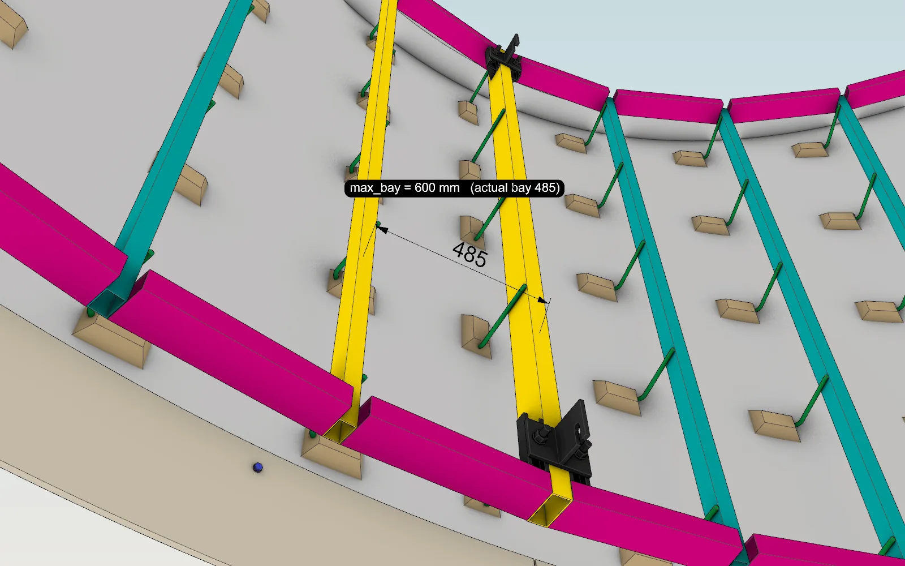
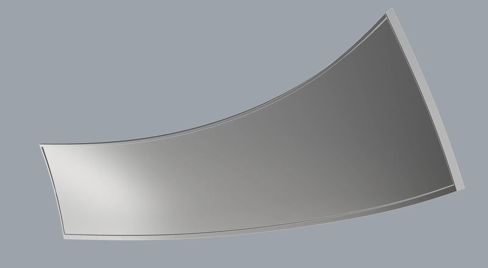
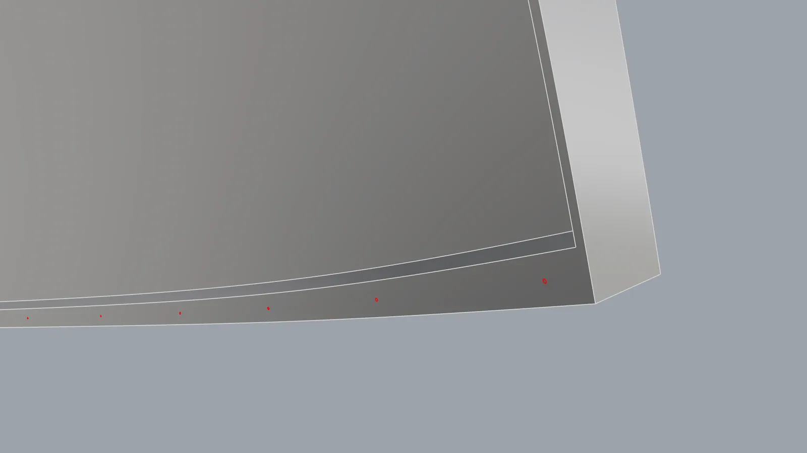
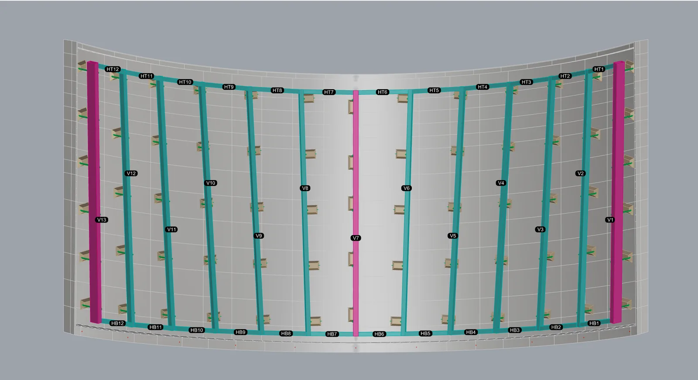
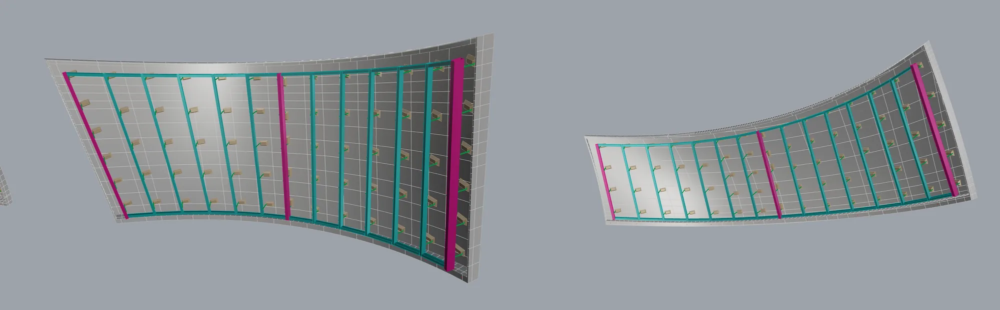
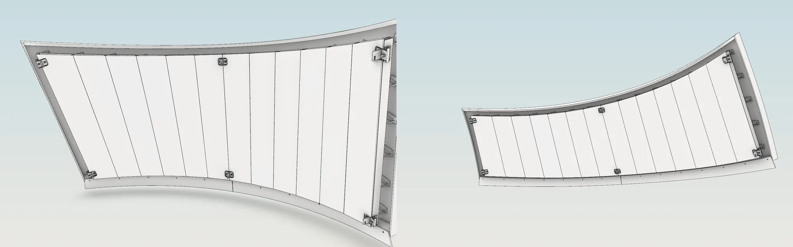
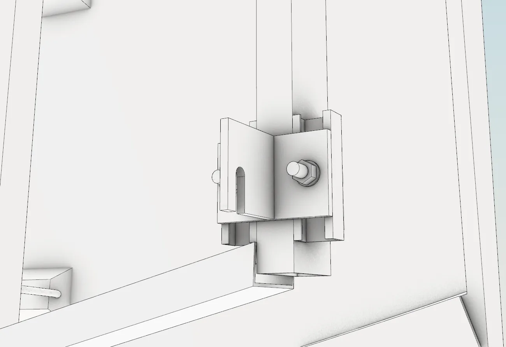
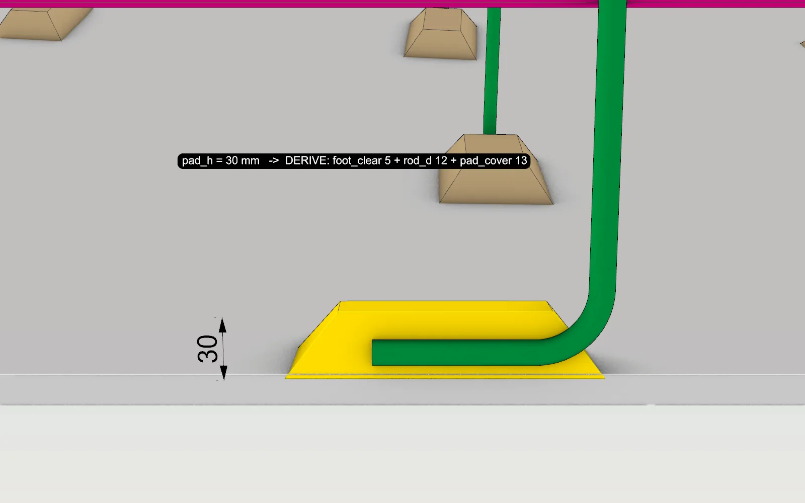

max_bayKEEP
- Value
- 600 mm (actual bay 485)
- Step
- 02 · frame layout
- Controls
- Largest bay between verticals; sets the stud count
- Reason
- Design variable, changes per project

One surface goes in. The panel, its steel stud frame, the flex anchors, the hanging connectors, the lining and the closing piece come out, with member lists ready for fabrication. Each step was written as a precise brief and run in Rhino through Claude and the Rhino MCP, with a stop for review before anything was built.
A GRC cladding fabricator set this as a design test. The brief was one line: take the 3D face of a panel and, using Grasshopper, arrange its steel frame and produce the fabrication drawing. A sample shop drawing of a similar panel came with it.
Tubes cannot follow a doubly curved face. Each member must be straight, and its gap to the GRC changes along its length.
Most dimensions had to be read from sections and details: 15 skin, 170 gap, 100 deep studs, 630 socket spacing. Some had to be estimated by scale.
Anchor spacing, edge distance, toe direction and pad cover come from GRC industry guidance (GRCA, PCI), not from the drawing.
The work was split into steps that each add one layer of the panel. Every step is a written brief, run in Rhino 8 through Claude and the Rhino MCP. The brief says exactly what to read, what rules to follow, when to stop and show the result, and what to check at the end.
Files from the previous step, reference sheets, units (mm). Never overwrite earlier files.
Open the previous definition and read its real output names instead of guessing them.
Front and back faces, the BACK normal, depth h, width b, stud axis. Defined once and reused.
Every number traced to a section, a detail or a standard. Estimated values are marked as such.
Show the layout first, wait for an OK. Build the solids, check, and wait again before saving.
Python 3 components in named groups. Every value is a named slider. Earlier groups stay untouched.
Bake layers, the .gh and .3dm files, CSV lists and captured views with fixed names.
Solid validity, spacings, clearances, clash tests, counts and weights, plus every assumption made.
Build only the GRC solid: the 15 mm skin, the returns on each edge and the thickened bottom edge with its cast-in sockets. No steel yet. First the surface is inspected and its edges named TOP, BOTTOM, LEFT and RIGHT, and the BACK direction is shown, then work waits for an OK.
| Part | Depth (back) | Width (inward) | Source |
|---|---|---|---|
| Face skin | 15 | whole face | Sections H and V |
| Left and right returns | 150 | 20* | Section H |
| Top return (solid nib) | 140 | 50* | Section V |
| Bottom thickened edge | 150 | 90 + 10 haunch | Edge detail D1 |
| Ø8 cast-in sockets | 70 long | 45 from edge | D1, at most 630 apart, first and last 100 from the ends |
All dimensions in mm. * Estimated by scale from the drawing and left as parameters.



The curved panel is mapped onto a frame of straight steel tubes and tied to the skin with flex anchors. The layout is shown first (centrelines, bays, profiles by role, gaps, anchor points and toe arrows). Only after an OK are the tubes, rods and bonding pads built.


| P1 | P2 | |
|---|---|---|
| Bottom edge length | 6466 mm | 8576 mm |
| Members (verticals + chord pieces) | 37 (13 + 24) | 43 (15 + 28) |
| Frame steel weight | 230.3 kg | 224.7 kg |
| Gap skin to stud, min – max | 170 – 188 mm | 170 – 286 mm |
| Flex anchors | 67 | 70 |
| Anchor leg length, min – max | 224 – 273 mm | 237 – 371 mm |
| Largest anchor spacing | 592 mm | 588 mm |
| Foot effective length / pad cover (min) | 76 / 13 mm | 76 / 13 mm |
| Frame nodes (PT0…) | 39 | 45 |
The second panel curves more along its height, so the gap between straight studs and the skin, and with it the anchor legs, varies much more.
The parts that carry the panel's weight and close it off. Flex anchors only take wind load, so the panel hangs from rigid connectors on its main studs. Gypsum lines the back of the frame, and a GRC strip closes the cavity under the panel.
One at the bottom and one at the top of each edge and centre stud: 6 per panel. Each has 2 strut channels 50×30×2.5, 4 triangular stiffeners, 2 M16 hammer-head T-bolts and a 10 mm T bracket with a hook slot.
12.5 mm boards on the back of the frame, one per bay, jointed on stud centrelines. Rounded cut-outs (180×130, r 30) clear every bracket. 40 mm packers on the shallower studs.
An L-shaped GRC strip (15 mm) fixed to the back of the D1 edge with M8×40 screws into the cast-in sockets. Two pieces, split at the centre stud with a 5 mm joint.



| P1 | P2 | |
|---|---|---|
| Hanging connectors | 6 | 6 |
| Channels / stiffeners / T-bolts | 12 / 24 / 12 | 12 / 24 / 12 |
| Gypsum boards | 12 | 14 |
| Gypsum area | 14.9 m² | 15.2 m² |
| Packers (40 mm) | 10 | 12 |
| Closing pieces | 2 × 22.4 kg | 30.2 + 30.0 kg |
| M8 screws (= sockets) | 11 | 15 |
Connector steel and bolts for both panels: 37.6 kg. The brief asked for two gypsum layers; this was reduced to one during the review.
Three steps of "make every number a slider" left the definition with over a hundred inputs. Step 04 is a clean-up, not a redesign: every input is listed and classified, and the geometry must not change.
A design variable that changes per project or per panel: bay size, gap, edge inset, profiles by role, anchor spacing, on/off options.
A standard product, catalog size or code minimum: bolt and screw sizes, strut channel, plate thickness, gypsum 12.5, pad cover 13.
Already defined by other values: heel radius = 2 × rod Ø, pad height = clearance + rod Ø + cover, lip height = D1 height.
For each parameter, panel P1 is shown in close-up with the elements it controls highlighted in yellow, a label with the parameter name exactly as in the script, and a dimension when it is a length. Three samples were made first, to approve the format before doing the rest.


FOOT_CLEAR + ROD_D + PAD_COVER
SCR_LEN = 40.0 (M8×40, catalog)| Name | Step | Kind | Value | Controls | Proposal | Reason | Becomes |
|---|
The Grasshopper definition stays the source of the geometry. Rhino.Inside.Revit components will carry the panel, the frame and its parts into a Revit model, with their IDs and data.
This section will be filled in as the step is developed.
The fabrication drawing asked for in the brief, produced in Revit from the linked model.
This section will be filled in as the step is developed.